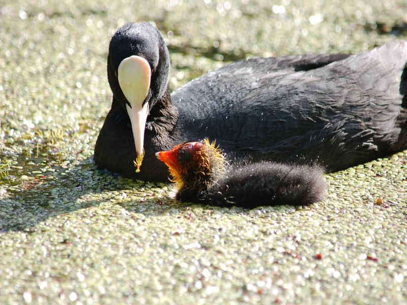

Blässhuhn
Fulica atra
Der einzige schwarze Wasservogel mit weißem Schnabel und weißem Stirnschild (Diese „Blässe“ stand bei der Namengebung Pate). Brütet an Gewässern aller Art im Ried, so auch hier am Lehrpfad. Im Frühsommer können wir dann Dunenjunge mit auffällig rostrotem Kopf und Hals beobachten.